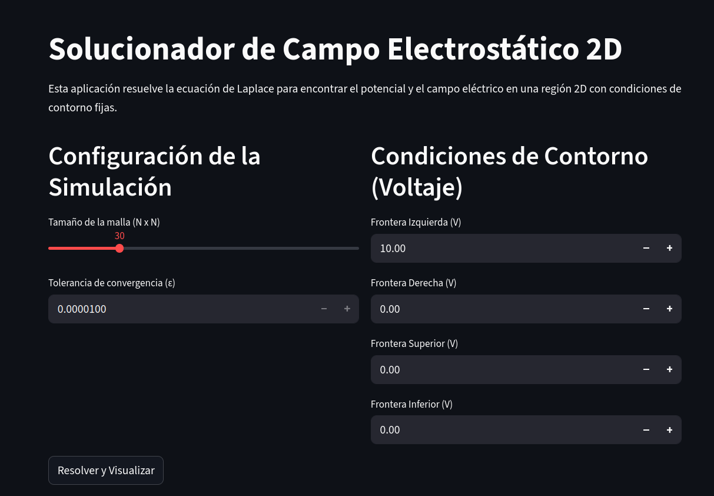
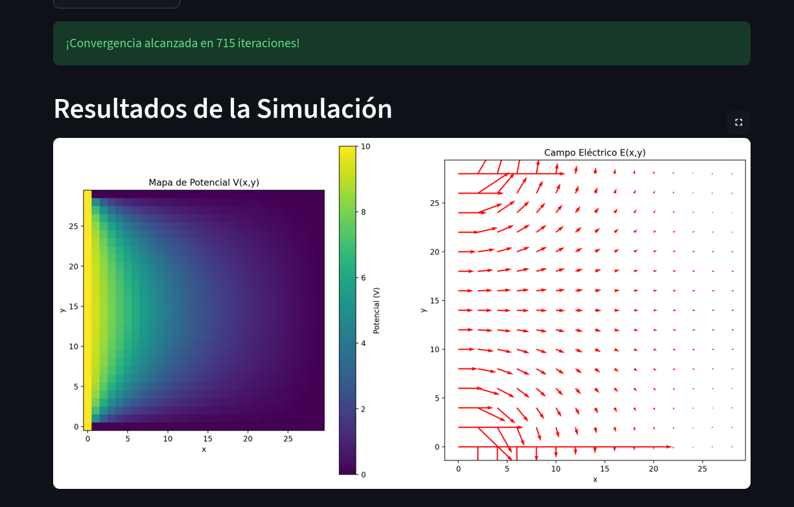
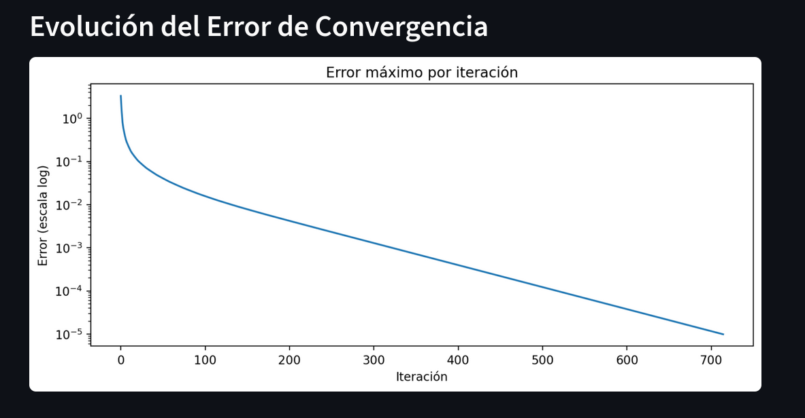

Interfaz Gráfica (Streamlit)
Este módulo proporciona una interfaz gráfica desarrollada con Streamlit para interactuar con el solucionador numérico de la ecuación de Laplace. Permite modificar parámetros, visualizar los resultados y ejecutar simulaciones sin necesidad de escribir código.
Descripción General
La interfaz ofrece:
Configuración del tamaño de la malla.
Selección de tolerancia de convergencia.
Ajuste de voltajes en cada frontera.
Ejecución del método de Gauss–Seidel.
Visualización del mapa de potencial.
Gráfica del campo eléctrico.
Evolución del error de convergencia.
Pantalla de Inicio
A continuación se muestra la pantalla principal de la aplicación, donde el usuario ingresa los parámetros de la simulación.
{kind=link}

Resultados de la Simulación
Mapa de Potencial y Campo Eléctrico
Una vez ejecutado el método iterativo, se presentan dos visualizaciones:
El mapa de potencial eléctrico V(x,y).
El campo eléctrico obtenido mediante gradiente numérico.
{kind=link}

Evolución del Error
También se grafica el error máximo por iteración, útil para analizar la convergencia del método.
{kind=link}

Ejecución desde la Terminal
La interfaz puede ejecutarse desde la raíz del proyecto:
streamlit run app.py
Esto inicia un servidor local accesible usualmente en:
http://localhost:8501
Integración con el Solucionador
La interfaz hace uso del módulo:
campo_estatico_mdf.solver.LaplaceSolver2D
El cual resuelve la ecuación de Laplace mediante Gauss–Seidel y calcula el campo eléctrico derivado del potencial.
GUI.rst está diseñado para complementar la documentación del API e
ilustrar su uso práctico.
Ejecutar la Aplicación desde la Documentación
La documentación puede consultarse en diferentes contextos (local o en línea). A continuación se explica cómo ejecutar la interfaz gráfica según el caso.
Nota
GitHub Pages y otros hospedajes estáticos no permiten ejecutar Streamlit. Solo es posible iniciar la aplicación en un entorno local o en un servicio de despliegue interactivo como Streamlit Community Cloud.
Ejecución Local (recomendada)
Si has clonado el repositorio e instalado las dependencias, puedes iniciar la interfaz directamente con:
streamlit run app.py
Una vez iniciada, puedes abrir el siguiente enlace en tu navegador: